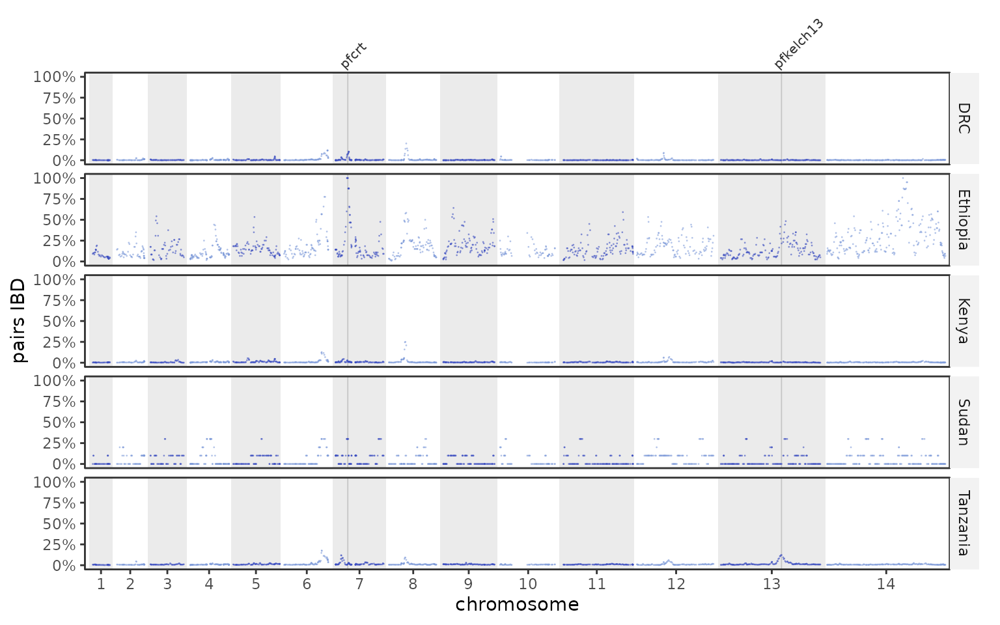
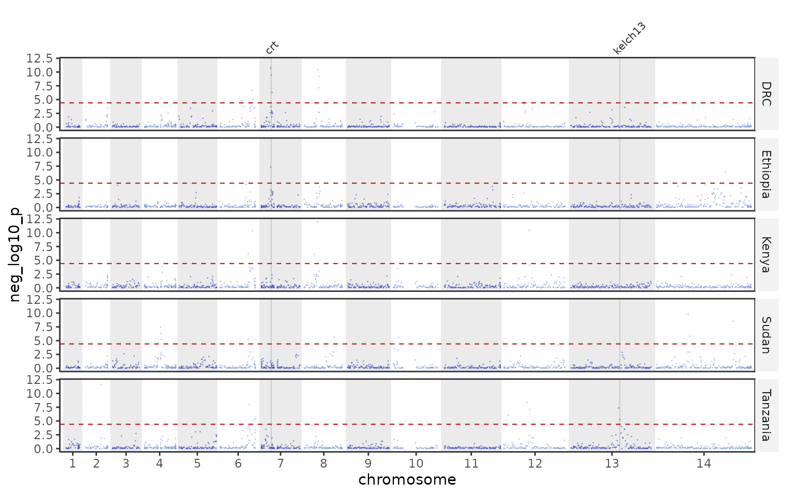
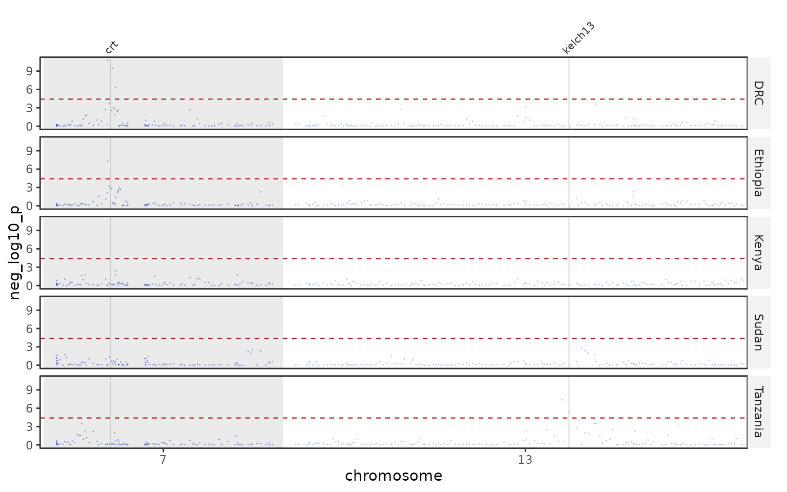
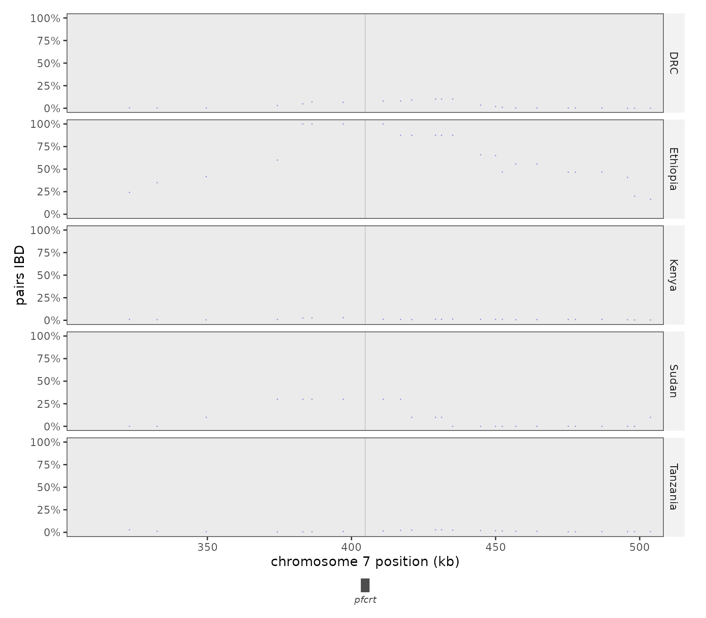
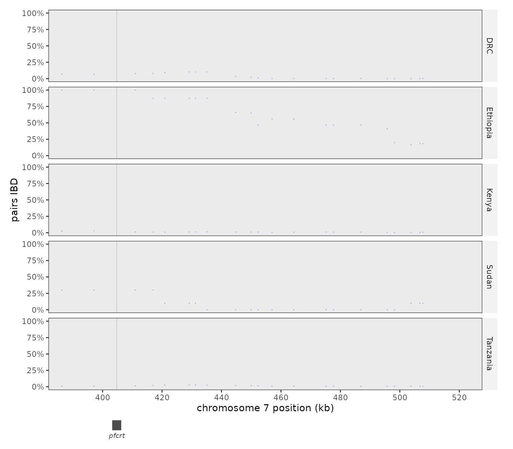
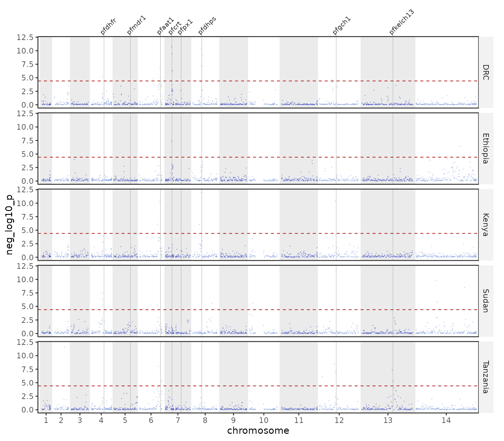
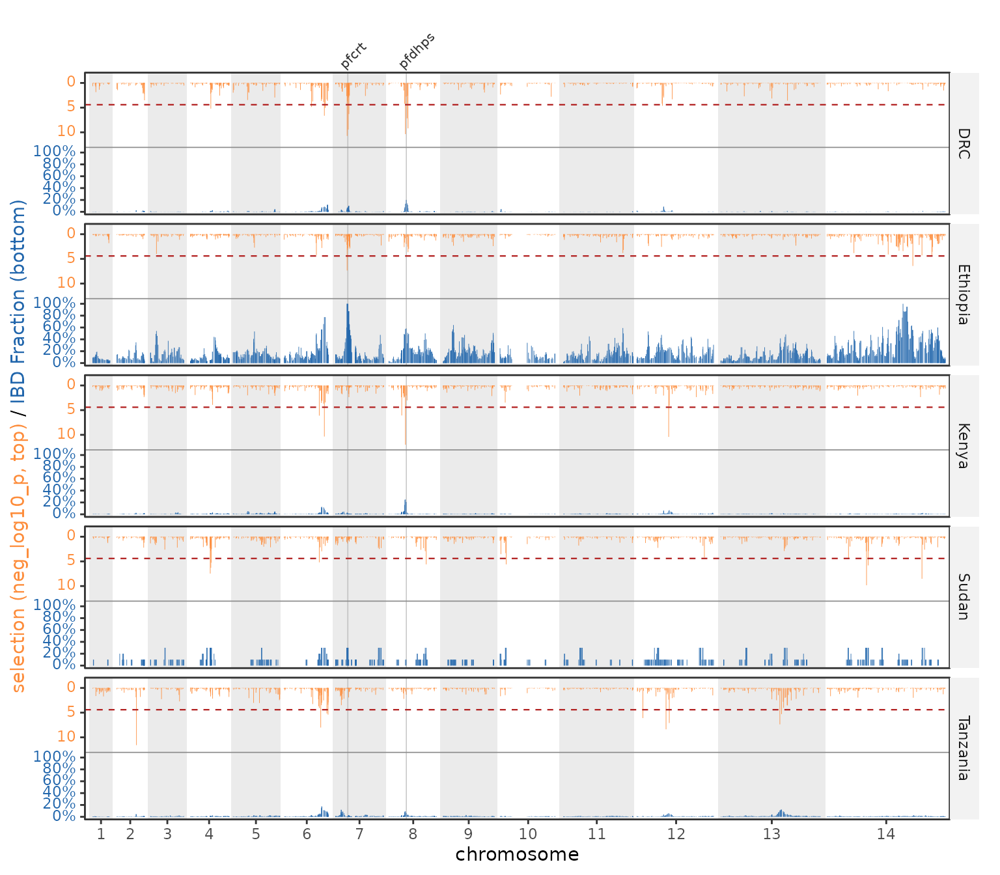
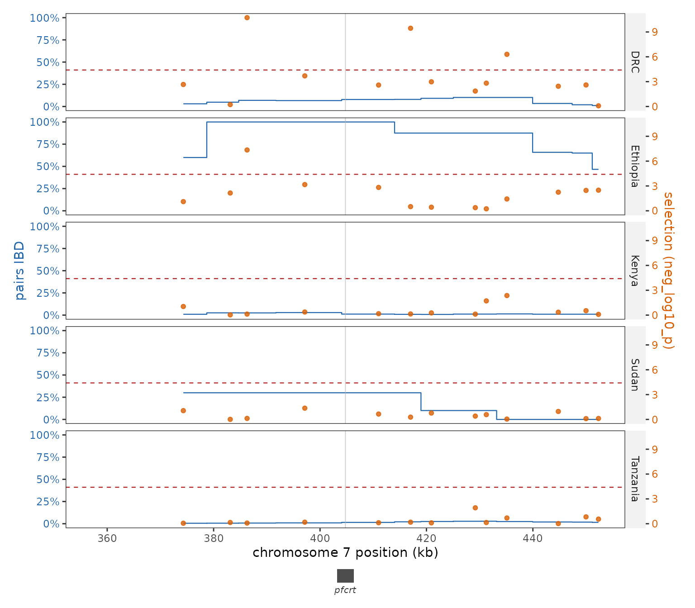
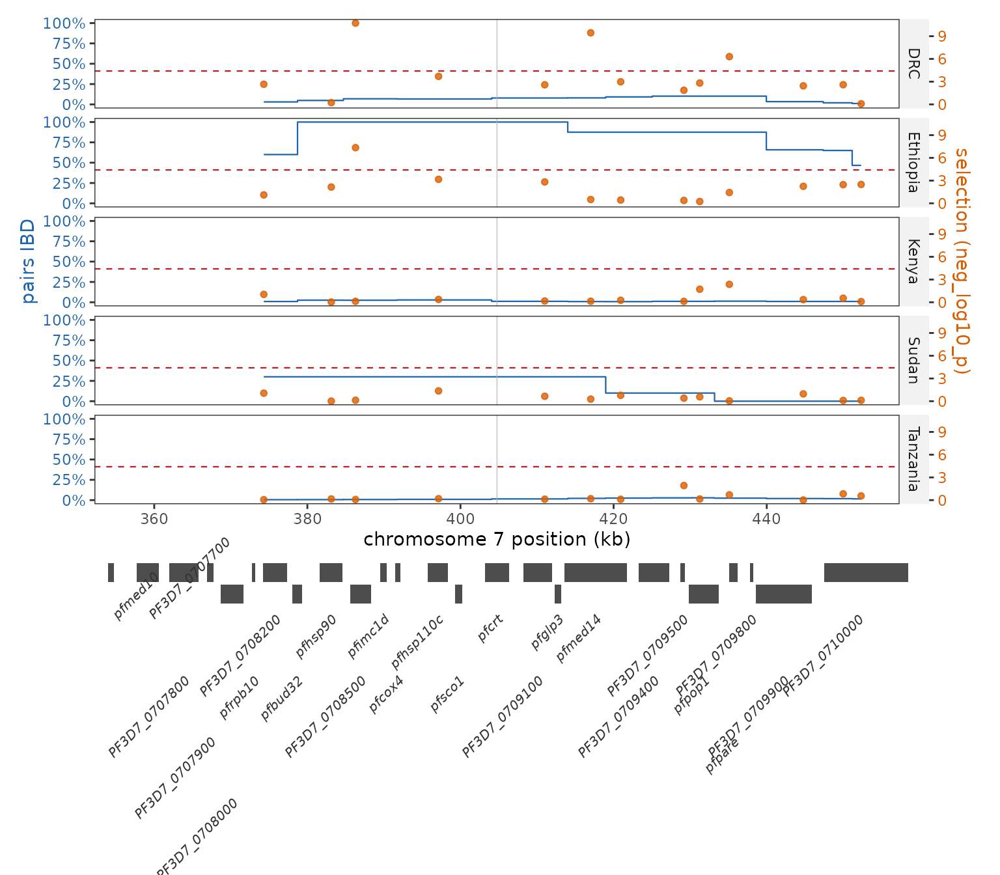

plasgenomicsutilsR plots identity-by-descent (IBD)
results produced by the companion Python package. You hand it the
per-SNP, pairwise-group, and selection-statistic tables; it draws
genome-wide tracks, group heatmaps, tug-of-war mirrors, and drug-gene
triangles.
Generating the input tables (plasgenomicsutils)
The tables come from the Python IBD tools, run on your
hmmibd-rs output, a SNP panel, a clean BCF, and a sample →
group map. The pipeline is:
# 1. Binary (pairs x SNPs) IBD matrix from hmmibd-rs blocks + a SNP panel (writes ibd_matrix.npz)
plasgenomicsutils build_ibd_matrix \
--blocks hmmibd_rs.hmm.tsv.gz --snps panel.vcf.gz --snp-format vcf \
--output ibd_matrix
# 2. Per-pair / per-SNP / per-group summaries (--pairwise-group-snp adds the group-pair table)
plasgenomicsutils analyze_ibd_matrix \
--matrix ibd_matrix --meta sample_groups.tsv --group-col group \
--pairwise-group-snp --output ibd_analysis
# 3. Global + per-group allele frequencies, single pass over the BCF
# (writes allele_freqs.tsv.gz and group_allele_freqs.tsv.gz into the output dir)
plasgenomicsutils compute_allele_freqs \
--bcf clean.snps.bcf --meta sample_groups.tsv --group-col group \
--output freqs/
# 4. IBD selection statistic (XiR,s), genome-wide and per group.
# --permute 200 adds a threshold and per-SNP p-values drawn from the data instead of
# from a chi-square(1); see "Choosing a significance criterion" below.
plasgenomicsutils ibd_selection_statistic \
--matrix ibd_matrix \
--af freqs/allele_freqs.tsv.gz --af-group freqs/group_allele_freqs.tsv.gz \
--meta sample_groups.tsv --group-col group \
--permute 200 \
--output ibd_selectionEach command’s options are listed by
plasgenomicsutils <command> --help.
The IbdResults container
ibd_results() ingests those tables (paths or data
frames) and precomputes the cumulative-genome coordinate the plots
share. A small public example dataset (five African
countries) ships with the package:
ibd <- example_ibd_results()
ibd
#> <IbdResults> reference: pf3d7
#> per_snp_group : 6785 rows
#> pairwise_group: 20355 rows
#> selection : 6785 rows
#> thresholds : 5
#> genes : 8On your own data, point it at the tool outputs:
ibd <- ibd_results(
per_snp_group = "ibd_analysis.per_snp_per_group.tsv.gz",
pairwise_group = "ibd_analysis.per_snp_pairwise_group.tsv.gz",
selection = "ibd_selection.per_group.selection_stats.tsv.gz",
threshold = "ibd_selection.per_group.threshold.txt",
genes = PF_EXAMPLE_DRUG_GENES,
blocks = "10_maf_filter_hmm.hmm.txt", # enables the block-based tools
meta = meta, # sample -> group
group_col_in_meta = "region", # names the grouping, and orders it
reference = "pf3d7"
)Short IBD segments are dropped
Small IBD blocks are commonly spurious, so segments with fewer than
15 SNPs or shorter than 15 kb are
discarded by default when blocks are read — the filter is
built in rather than something you must apply beforehand. It is applied
to the IBD evidence only: the analyzed-sample set
behind every denominator still comes from every row of the blocks file,
so a pair whose only segment was short still counts as compared, it
simply contributes no sharing.
ibd_results(..., blocks = "hmm.txt") # >= 15 SNPs, >= 15 kb
ibd_results(..., blocks = "hmm.txt", min_block_snp = 20, min_block_kb = 25)
ibd_results(..., blocks = "hmm.txt", min_block_snp = 0, min_block_kb = 0) # keep everythingPrinting the object reports how many segments went, since the filter
moves every downstream fraction. The Python tools take the same
--min-block-snp / --min-block-kb flags with
the same defaults, so the two sides agree.
Ordering the groups
Groups read in a sensible order by default (a natural sort, so
site2 precedes site10). To impose your own —
geographic rather than alphabetical, say — make the metadata column a
factor and name it with group_col_in_meta; its levels then
order every loaded table, so facets, legends and
triangle axes all agree:
meta$region <- factor(meta$region,
levels = c("Northwest", "North", "Northeast",
"East", "West", "Southwest"))
ibd <- ibd_results(..., meta = meta, group_col_in_meta = "region")
ibd$get_group_order()ibd$set_group_order(...) changes it afterwards. Leaving
out a group that the results actually contain is an error rather than a
silent NA; naming a group nothing uses is only a
warning.
Dropping groups
Everything an IbdResults holds is summarised either per
group or per group pair, so groups are the unit to cut on.
$subset_groups() returns a copy;
$restrict_groups() does it in place. drop is
the usual form — “everything except these” — and keep names
the survivors instead:
groups <- levels(factor(ibd$get_selection()$group))
ibd$subset_groups(drop = groups[1])
#> <IbdResults> reference: pf3d7
#> per_snp_group : 5428 rows
#> pairwise_group: 13570 rows
#> selection : 5428 rows
#> thresholds : 4
#> genes : 8The per-SNP, group-pair, selection and threshold tables are all
filtered, and a group-pair row survives only when both
of its groups do — a cell against a dropped group means nothing. With
meta loaded, blocks and the analysed-sample
set narrow to the surviving groups’ samples too, so
gene_ibd_overlap(), gene_ibd_pairs() and
plot_ibd_network() follow. The group order is trimmed to
whatever is left.
Narrowing groups cannot recompute a summary, so every number kept is still the one computed over that group’s full sample set — groups are dropped, never re-derived.
Highlighting genes
The genes track supplies gene positions
and display names. PF_EXAMPLE_DRUG_GENES
is a small bundled track of drug-resistance loci:
PF_EXAMPLE_DRUG_GENES
#> Pf3D7_chrom start end chrom gene_id name
#> 1 Pf3D7_07_v3 403221 406317 7 PF3D7_0709000 pfcrt
#> 2 Pf3D7_04_v3 748087 749914 4 PF3D7_0417200 pfdhfr
#> 3 Pf3D7_05_v3 957889 962149 5 PF3D7_0523000 pfmdr1
#> 4 Pf3D7_08_v3 548199 550616 8 PF3D7_0810800 pfdhps
#> 5 Pf3D7_13_v3 1724816 1726997 13 PF3D7_1343700 pfkelch13
#> 6 Pf3D7_06_v3 1213947 1216005 6 PF3D7_0629500 pfaat1
#> 7 Pf3D7_12_v3 974371 975541 12 PF3D7_1224000 pfgch1
#> 8 Pf3D7_07_v3 891682 899051 7 PF3D7_0720700 pfpx1Pass highlight_genes to pick which to mark and
label_genes = TRUE to name them (top panel only, at each
gene’s true position — labels are never nudged off-position).
Genome-wide tracks
Per-SNP IBD along the genome, faceted by group, with two drug genes labelled:
plot_ibd_sharing_manhattan(ibd, highlight_genes = c("pfcrt", "pfkelch13"), label_genes = TRUE)
The IBD selection statistic with the per-group Bonferroni threshold:
plot_selection_manhattan(ibd, metric = "neg_log10_p",
highlight_genes = c("pfcrt", "pfkelch13"), label_genes = TRUE)
Every genome-wide plot can drop chromosomes (chroms /
skip_chr, the rest re-laid out contiguously):
plot_selection_manhattan(ibd, chroms = c("7", "13"),
highlight_genes = c("pfcrt", "pfkelch13"), label_genes = TRUE)Zooming in
zoom crops the same plot to one interval without
changing the data behind it, so a locus sits at the same coordinate in
the zoomed and the genome-wide figure. It takes a chromosome, a range, a
gene name from the object’s track, or a data frame with chr/start/end,
and every gene in the window is drawn and named in a track
underneath:
plot_selection_manhattan(ibd, zoom = "7:340,000-470,000")
zoom_pad adds context around the interval – a fraction
of its span below 1, base pairs at or above it – which is what makes a
single gene a usable window:
plot_ibd_sharing_manhattan(ibd, zoom = "pfcrt", zoom_pad = 100000)
Two values pad the left and the right separately, in that order or named, so a window can follow a signal that runs off one side of a gene:
plot_ibd_sharing_manhattan(ibd, zoom = "pfcrt",
zoom_pad = c(left = 20000, right = 120000))
zoom works the same way on
plot_ibd_tugofwar() and on the scan plots
(plot_ihs(), plot_beta(),
plot_diversity()).
Which genes are under selection?
pos_selection_genes() intersects the significant SNPs
(at or above each group’s threshold) with the object’s
genes track. Because filtering can leave the peak SNP just
outside a gene, a SNP counts when it falls within within bp
of the gene (default 2 kb):
pos_selection_genes(ibd) # object's drug-gene track, 2 kb window
#> # A tibble: 0 × 14
#> # ℹ 14 variables: group <chr>, gene_id <chr>, name <chr>, chr <chr>,
#> # gene_start <int>, gene_end <int>, n_snps <int>, min_distance <dbl>,
#> # peak_pos <int>, peak_maf <dbl>, peak_z_score <dbl>, peak_chi2_stat <dbl>,
#> # peak_neg_log10_p <dbl>, peak_significant <dbl>Every metric in the selection table is reported at each gene’s peak
SNP (peak_*). Pass genes = PF3D7_GENES to scan
every gene without attaching the 5,000-gene track to
the object (which would make the Manhattan plots draw a line per
gene):
pos_selection_genes(ibd, genes = PF3D7_GENES, within = 2000)
#> # A tibble: 56 × 14
#> group gene_id name chr gene_start gene_end n_snps min_distance peak_pos
#> <chr> <chr> <chr> <chr> <int> <int> <int> <dbl> <dbl>
#> 1 DRC PF3D7_070… pfhs… 7 381591 384614 1 1677 386290
#> 2 DRC PF3D7_070… PF3D… 7 385582 388321 1 0 386290
#> 3 DRC PF3D7_081… pfab… 8 521186 524009 1 898 524906
#> 4 DRC PF3D7_081… pfpp… 8 525057 527604 1 151 524906
#> 5 DRC PF3D7_070… pfme… 7 413559 421749 1 0 417012
#> 6 DRC PF3D7_081… PF3D… 8 593648 595412 1 573 595984
#> 7 DRC PF3D7_081… PF3D… 8 596189 600328 1 205 595984
#> 8 DRC PF3D7_081… pfca… 8 567823 573148 1 0 568929
#> 9 DRC PF3D7_062… PF3D… 6 1183895 1185617 1 493 1186109
#> 10 DRC PF3D7_062… pfga… 6 1185995 1188644 1 0 1186109
#> # ℹ 46 more rows
#> # ℹ 5 more variables: peak_maf <dbl>, peak_z_score <dbl>, peak_chi2_stat <dbl>,
#> # peak_neg_log10_p <dbl>, peak_significant <lgl>Choosing a significance criterion
ibd_selection_statistic reports up to four cutoffs, and
get_thresholds() shows them beside the diagnostic that says
which to use:
ibd$get_thresholds()
#> # A tibble: 5 × 2
#> group threshold
#> <chr> <dbl>
#> 1 DRC 4.41
#> 2 Ethiopia 4.41
#> 3 Kenya 4.41
#> 4 Sudan 4.41
#> 5 Tanzania 4.41Two read their p-values off a chi-square(1):
Bonferroni (family-wise) and
Benjamini-Hochberg (a stated share of the calls may be
false, so it calls more). Two come from --permute, which
rebuilds the null by sliding each pair’s IBD segments to a random
circular offset — preserving that pair’s total sharing, segment count,
segment lengths and along-genome autocorrelation, and destroying only
the alignment of segments between pairs:
permutation (family-wise, from the
per-replicate genome-wide maxima) and
empirical (Benjamini-Hochberg over the
permutation’s own per-SNP p-values).
lambda_gc decides between them. It is 1 when the
chi-square(1) reference fits, and on real P. falciparum data it
comes out near 0.1: the within-MAF-bin standardisation fixes the
z-scores’ mean and variance and nothing about their shape. Where it is
far from 1, prefer the permutation lines — pval and
q_value are still fine for ranking SNPs, since
every step from z_score to neg_log10_p is
monotone, but they are not probabilities.
Draw any one of them, or "all" for every kind the run
wrote (chi-square lines warm, permutation lines cool). The shipped
example comes from a run without --permute, so only the
Bonferroni line is available here:
plot_selection_manhattan(ibd, draw_threshold = "all", label_genes = TRUE)
Then merge whichever criterion you settle on into loci, rather than reporting SNP counts — a sweep spans many SNPs, so a SNP count largely measures panel density:
selection_peaks(ibd, criterion = "bonferroni", genes = PF3D7_GENES, min_snps = 2)
#> # A tibble: 2 × 14
#> group chr start end width n_snps peak_pos peak_value mean_value
#> <chr> <chr> <dbl> <dbl> <dbl> <int> <dbl> <dbl> <dbl>
#> 1 DRC 7 417012 435119 18107 2 417012 9.45 7.88
#> 2 Sudan 4 631781 655067 23286 3 631781 7.47 6.34
#> # ℹ 5 more variables: peak_interval_genes <list>, gene_at_peak <chr>,
#> # nearest_gene <chr>, distance_to_gene <dbl>, n_genes <int>With a --permute run the same call takes
criterion = "permutation" or "empirical", and
draw_threshold the matching names:
selection_peaks(ibd, criterion = "permutation", genes = PF3D7_GENES, min_snps = 2)
selection_peaks(ibd, criterion = "empirical", genes = PF3D7_GENES, min_snps = 2)Tug-of-war
Selection hangs from the top, IBD rises from the bottom, sharing one
colour-coded axis. scale = "common" keeps panels
comparable; scale = "free" lets each group use its own
maximum:
plot_ibd_tugofwar(ibd, highlight_genes = c("pfcrt", "pfdhps"), label_genes = TRUE)
top replaces the upper track with any per-SNP scan,
which is how you ask whether the IBD signal coincides with a haplotype
signal rather than with the statistic derived from the same segments.
The scan needs a group column matching the IBD groups;
two-population scans (run_rsb(), run_xpehh())
are indexed by population pair and cannot be mirrored against per-group
IBD.
# hap <- parasite_haplotypes(ps, maf = 0.05)
plot_ibd_tugofwar(ibd, top = run_ihs(hap, group = "region"), top_label = "iHS")One locus in detail
plot_ibd_locus() puts the two signals on two axes over a
single window: IBD sharing as a step curve on the left, the scan as
points on the right, genes underneath. The axes carry different units,
so read shapes and positions rather than comparing heights.
plot_ibd_locus(ibd, "pfcrt", pad = 50000)
size_by and shape_by map extra scan columns
onto the points when the scan has them – shape_by picks up
a mutation-class column (mutation_type,
mutation_class, effect,
consequence) on its own, and NA turns either
off.
Showing every gene in the window
The gene track and the marks inside the panel can come from different
tables. genes_for_track fills the track from a full
annotation so the whole neighbourhood is visible, while the object’s own
short track still decides what gets marked – without it the only way to
see the neighbours is to attach the whole annotation, which draws a
reference line per gene. Systematic ids are much wider than the genes
they sit under, so gene_label_angle turns them out of each
other’s way:
plot_ibd_locus(ibd, "pfcrt", pad = 50000,
genes_for_track = PF3D7_GENES, gene_label_angle = 45)
Both arguments work on any zoomed plot, including the scan plots.
Region-by-group sharing
IBD between group pairs along the genome; trans = "log2"
and a single-hue ramp keep it readable when most values are near
zero:
plot_ibd_pairwise_group_heatmap(ibd, trans = "log2")
Triangles ask whether a gene (or a specific locus) is itself shared:
plot_pairwise_ibd_for_genes(ibd) # one facet per gene
plot_pairwise_ibd_for_genes(ibd, snps = "Pf3D7_07_v3:403222") # a single locus
plot_pairwise_ibd_for_genes(ibd, individual = TRUE) # a list, one plot per feature
# pages from `individual = TRUE` are colour-comparable only on a shared scale
save_plot("triangles.pdf",
plot_pairwise_ibd_for_genes(ibd, individual = TRUE, limits = "shared"))With IBD blocks loaded, a gene’s cell is the fraction of
pairs whose IBD segment overlaps the gene — so a
segment spanning the gene counts even where no SNP was genotyped inside
it. Without blocks it falls back to aggregating the SNPs inside the gene
(agg = "mean"/"median"/"max").
Gene spans are CDS, which can be short relative to a sparse panel, so
within widens the window on either path:
plot_pairwise_ibd_for_genes(ibd, within = 10000) # count SNPs / blocks within 10 kbWhich pairs share a gene
gene_ibd_overlap() gives the fraction per group pair;
gene_ibd_pairs() gives the adjacency list underneath it —
one row per sample pair × IBD block × gene, with how much of the gene
that block covers. Pairs with no IBD over a gene are simply absent.
ov <- gene_ibd_overlap(ibd, genes = c("pfcrt", "pfdhps")) # fractions per group pair
pairs <- gene_ibd_pairs(ibd, genes = c("pfcrt", "pfdhps"))
subset(pairs, coverage == "complete") # pairs sharing the whole gene
table(pairs$gene, pairs$coverage) # complete vs partial, per geneColumns: sample1/sample2
(order-normalised), chr,
block_start/block_end, gene,
gene_id, gene_start/gene_end,
coverage (complete/partial),
covered_start/covered_end (the gene’s own
bounds when complete), covered_bp and
percent_covered. The Python
plasgenomicsutils ibd_gene_pairs writes the same table as a
TSV.
Sample-level networks
Each node is a sample, each edge a pair sharing an IBD block over the gene or locus. Colour and shape are independent metadata columns, so two variables can be read off one plot:
plot_ibd_network(ibd, gene = "pfcrt", color_group = "region")
plot_ibd_network(ibd, gene = "pfcrt", color_group = "region", shape_group = "collection_year")
# `colors` / `shapes` take a NAMED vector (mapped by name, may be partial) or an unnamed
# one (positional, in the column's level order)
plot_ibd_network(ibd, gene = "pfcrt", color_group = "region",
colors = c(North = "#1f78b4", East = "#33a02c"))An edge means “this pair is IBD here”, and sharing sets
how strictly: "overlap" (default) accepts a segment
touching the interval anywhere, "complete" demands one
spanning the whole gene/locus. Which you want depends on the question —
any shared ancestry at the locus, or the whole locus inherited
together:
plot_ibd_network(ibd, gene = "pfdhps", color_group = "region") # overlap
plot_ibd_network(ibd, gene = "pfdhps", color_group = "region", sharing = "complete")The two can differ a lot: on one real cohort 90% of the pairs sharing
pfcrt share all of it, but only 45% for
pfdhps, whose IBD segments are more fragmented. The
subtitle records which criterion drew the graph, and
gene_ibd_pairs() shows per pair which segments are
"complete" versus "partial".
Densely inter-connected groups collapse into an unreadable blob under
a plain force layout, so edge attraction is weighted by
(1 - J)^spread, J being the Jaccard overlap of
two samples’ IBD neighbourhoods: redundant edges inside a near-clique
pull only weakly and the group opens into a disc, while edges bridging
distinct groups keep full pull. spread = 1.5 by default;
raise it to loosen the densest groups further, or use
spread = 0 for plain fr.
Relatedness over the whole genome
The networks above ask who shares one locus, where every edge means
the same thing. plot_ibd_pair_network() asks who is related
overall: an edge joins a pair sharing more than
min_ibd of the accessible genome, and its width is how
much. It reads the pair table from
plasgenomicsutils ibd_fraction_and_snp_density, attached
with ibd_results(pair_fraction = ):
plot_ibd_pair_network(ibd, color_group = "region", min_ibd = 0.03)Samples with no edge are drawn as a grid underneath and counted, rather than dropped – an unrelated sample is a result, and leaving it out would overstate how connected a cohort is. Legend breaks default to powers of two, because sharing runs over orders of magnitude and a linear legend collapses the interesting end into one key.
pair_fraction_summary() is the same table read as
numbers: one row per pair of metadata groups, over every sample pair
spanning them.
ibd$pair_fraction_summary(group = "region")Two groups’ row covers all n_a x n_b cross-group pairs;
a group’s row against itself covers its choose(n, 2)
within-group pairs, which is what says whether a group is internally
related at all – so the within- and between-group rows are meant to be
read against each other.
The quartiles come as standard because relatedness is skewed: most
pairs share almost nothing and a few share a great deal, so a mean alone
reads as a far more related cohort than any pair actually is.
n_samples_a / n_samples_b sit beside
n_pairs so the denominator is checkable – short of
n_a * n_b (or choose(n, 2) within a group)
means the pair table is missing pairs rather than the groups being
small.
Saving
save_plot() sizes the canvas to the drawing. Plots with
a locked panel shape — the networks and the gene triangles both use
coord_fixed() — only fill a canvas of one particular
aspect, and on any other shape the remainder shows up as blank margin.
Give one dimension and the other is computed from the built plot’s panel
ratio and the space its titles, legends and margins actually need; give
neither and both are worked out; give both and they are used as-is.
fit = FALSE opts out.
save_plot("network.pdf", p) # both worked out, no leftover margin
save_plot("network.pdf", p, width = 12) # height follows from the contents
save_plot("network.pdf", p, height = 6) # width follows instead
save_plot("network.pdf", p, width = 9, height = 9) # exactly as asked
save_plot("ibd_tugofwar.pdf", plot_ibd_tugofwar(ibd)) # auto-sized; cairo PDF by default
save_plot("triangles.pdf", plot_pairwise_ibd_for_genes(ibd, individual = TRUE)) # multi-page